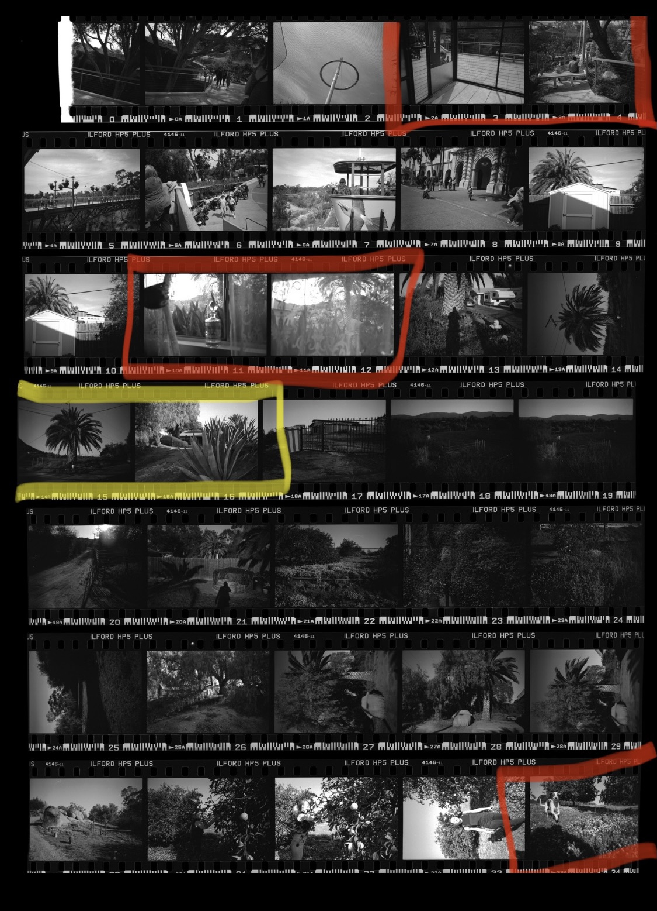

I put this definition of my system here in the hopes that anyone struggling to develop one can find some direction in it. I highly recommend playing around with what works for you and covers the technologies you are most comfortable with in your day-to-day usage. This method gave me the hybrid approach I sought, but your mileage may vary.
Over the years I’ve developed a hybrid approach to how I handle and deal with my archive of negatives. While I want to be able to print everything in the darkroom I want the ease of a digital archival system. I want to be able to view my contact sheets on the go, critique my photographs, mark them up, and think about what I want to print after I get to my darkroom after a long commute. This is a few iterations deep and I think I have finally settled on a highly functional hybrid system that can withstand changes to underlying technology. This process inserts in between the developing and printing process that I have defined in the article on my process.
negatives
After my negatives have dried and they have been cut and slipped into PrintFile archival sleeves then the next step has always been to make a contact sheet. The contact sheet represents the entire roll shot and can show a lot about your thought process around a scene or shoot. Reviewing contact sheets is an essential skill in critiqueing and improving your own photography. I label each of my contact sheets by year and roll shot, not usually caring for the exact date of the roll just the order in which it was developed. I don’t find knowing that something was shot on February 21, 2018 versus March 12, 2018 to be that consequential. If the event is significant enough you will be able to tell from the content of the photograph and the year what time the photograph was made. So for example the 30th roll developed in 2019 would be a contact sheet labeled as 2019-R30.
I then scan each contact sheet as a JPEG. The reason for this is that the JPEG is a widely used format that has a lot of tooling around the format for editing and converting in the event the JPEG image format was ever retired. JPEGs also scan much quicker than TIFFs or other RAW formats and the purpose of the contact sheet is just to be able to review the negatives. I used to print all physical contact sheets and enjoyed the process of marking them up with a red marker, but found this hybrid approach unique in that it enabled me to bring my entire archive with me on my commute without bringing stacks of paper. After scanning, I upload all of the negatives to iCloud so they sync immediately with my iPhone with an album name of the same year.
Now, with my contact sheets on my phone, I can review them any place and at any time. Commuting home on the light rail, riding the bus, waiting for friends at happy hour – you name it, I can think about any roll I’ve ever shot from the palm of my hand. From there I review each new contact sheet and use the Apple Photos markup feature to make notes drawn directly on the image as I would have done with a physical contact sheet. Every few days I synchronize the Apple Photos repository to an Amazon S3 bucket for cheap, archival backup storage.

As I review each contact sheet I append to a text file the contact sheet label (ex. 2020-R355) and the tags I would like to be able to find this contact sheet on. Location, people in the contact sheet, specific events, and just anything that comes to mind. I let this be rather free form on purpose and sometimes come back to add more tags later as I see fit. The reason I started doing this is because initially I used various software to catalog and tag the contact sheet images themselves, but found that as the software change my tags would sometimes be erased or wouldn’t be able to be read by other programs. A plain text file will always be the same and I can always search for any tag easily inside of a text file. Additionally, a plain text file can be read and edited on any computing device.
2020-R301,family|christmas|hawaii|me|dolphins|ilford|fp4
2020-R302,hawaii|dad|vintage car|beach|swimming|ilford|hp5|6x6
2020-R303,seattle|washington|pike place market|ilford|hp5
...
This now presents me with a convenient way to find and decide what I want to print in the darkroom. I can quickly search for say “hawaii” to find all rolls shot while in Hawaii, then pick out the negatives from those contact sheets I want to print. I then go ahead and add those specific negatives I want to print to an issue tracker. You can read more about how I track what to print in my article on how I treat my printing like a software project.
prints
After my prints have been toned and dried they all get sorted by a rough category. Depending on how many categories I think a print will fit in I’ll print that many copies on my first run of final prints. This ties in with my numbering system mentioned in the article on my process. I loosely number my prints based upon the printing session so prints made in Q1 of 2020 will have the naming schema “2020Q1 Print 2 of 7” for instance. I do this as I believe each printing of a negative is a new interpretation and if anyone wants to go through my prints in the future I want that to be taken into account.
Prints then get sorted into categorical archival boxes for potential “projects” with loose themes like Daina (my wife), Photographers, Seattle, and Lithuanian-American Community. These match the loose projects I have in my head when I’m photographing. Boxes are then labeled by project and the years of prints they contain for example “Seattle 2018-2019” then are stored up off the ground to make sure if the basement darkroom ever floods that I will have time to wade into the water and save my work (fingers crossed I never experienced flooding or a fire).
summary without commentary
| negatives | |
|---|---|
| archiving | Each roll in an individual PrintFile archival sheet. Do not care for exact date or month as any significant enough event can be discovered. For example: 2020-R205 This signifies the 205th roll developed in 2020. |
| contact sheets | Scanned digitally. Uploaded to Apple Photos and backed up to Amazon S3. Annotated using Apple Photos markup feature. |
| tagging | Tagged using a plaintext file with a new line for each roll. Plain text tags allows you to search over rolls no matter the technology or if software is discontinued. |
| prints | |
|---|---|
| print numbering | Example: 2020Q1 Print 2 of 7 Signifies I printed 7 prints of that negative in Q1 of 2020 and that this is the 2nd print in that series. |
| print archiving | Archival boxes by category/project and year. Make enough prints to fill each categorical box a print could possibly fit in so I don't have to hunt them down later. |